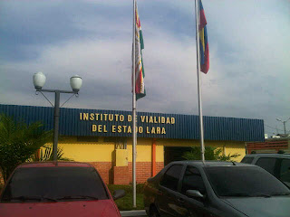
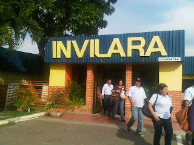

|

|
|
|
|
En el año 1957 aproximadamente, la Gobernación del Estado Lara mediante un Estado de Emergencia decide crear un organismo con el nombre de Obras Públicas del Estado (OPE), que funcionaba en un establecimiento conocido como "El Garaje del Gobierno", que se encontraba en la carrera 19 con calle 41. Simultáneamente en la Ave. Fuerzas Armadas con calle 57, se encontraba una almacenadora de piedra, utilizada para diferentes obras.
Posteriormente, se crea la Sala Técnica, trasladando el personal técnico (dibujantes e inspectores de obras) ubicado en la Gobernación del Estado Lara a la Ave. Fuerzas Armadas.
En el año 1991, según el artículo número 37 de la Ley Orgánica de la Administración del Estado, y según gaceta extraordinaria número 15, se decreta el cambio de nombre de Obras Públicas del Estado (OPE), por la Dirección de Infraestructura y Mantenimiento de Obras (DIMO).
 La Gobernación del Estado Lara firmó con el Ejecutivo Nacional, a través del extinto Ministerio de Transporte y Comunicaciones, el Convenio de Transferencia de Competencias, mediante el cual, asume la responsabilidad sobre la vialidad de todo el Estado. Como consecuencia de ello, nace la Ley de Conservación, Administración y aprovechamiento de la Vialidad de nuestra entidad federal, en función de la cual la entonces asamblea Legislativa, en sesión extraordinaria del 11 de octubre de 1996, dictó la Ley para la Creación del Instituto de Vialidad del Estado Lara, publicada en Gaceta Oficial Extraordinaria Nº 210 de fecha 07 de noviembre de 1996.
INVILARA, es un instituto autónomo creado para asumir la responsabilidad de la vialidad en el Estado Lara, en lo relacionado con el mantenimiento, recuperación, mejoramiento, administración y aprovechamiento de toda la red vial estadal. Actualmente se encuentra ubicado en Barquisimeto, Estado Lara, específicamente en la Avenida Fuerzas Armadas con calle 57; mientras que su planta de asfalto se ubica en San José de Quibor, Estado Lara.